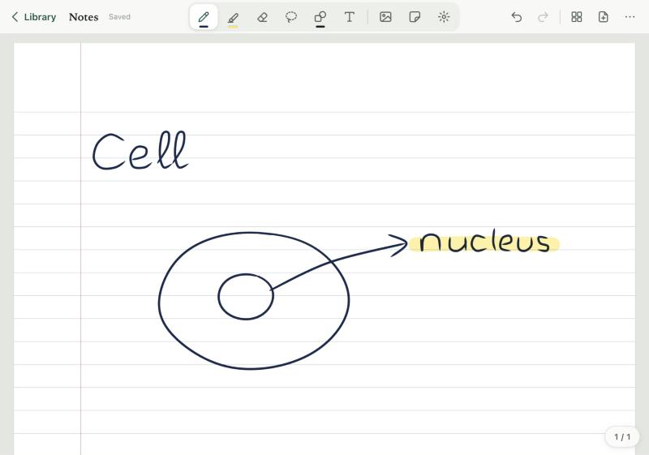

PencilKit & Active Stylus
Low-latency pressure engine.
9ms hardware inking on iPad with Apple Pencil tilt and pressure curves. On Android, active S-Pen and precision styluses register sub-millimeter coordinates with native palm rejection.
